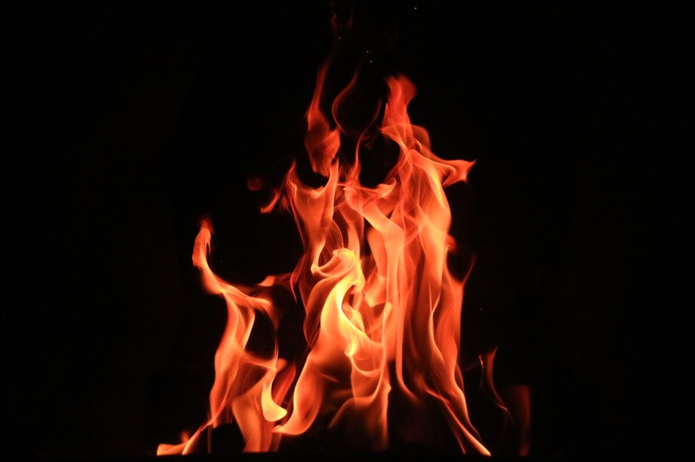

Trusted by thousands of callers nationwide
Twin Flame Reading by Phone — Make Sense of the Connection, 24/7
If it's the most intense connection of your life and it's wrecking you a little, you're probably asking the right question. A twin flame reading tells you what's really going on. Every twin flame psychic on our line is hand-vetted by our master psychics — connect in under 60 seconds. First minute $1, hang up anytime.
- Hand-vetted twin flame psychics
- Available 24/7 nationwide
- Hang up anytime

A twin flame connection doesn't ask politely. It shows up, turns your life over, pulls away, comes back, and leaves you Googling at 1 a.m. trying to figure out what's happening to you. A twin flame reading by phone gives you a clear, grounded read on the connection, the stage you're in, and what the separation actually means — with a hand-vetted psychic, anywhere in the U.S., 24/7.
First-time callers get an introductory rate of $1 per minute, or 15 minutes for $10. Hang up the moment it makes sense.
What Is a Twin Flame Reading?
A twin flame reading is a love reading for the rarest, most intense bond there is — your mirror soul. It's not "do they like me." It's: is this actually a twin flame or a very strong soulmate, what stage are we in, why does it keep pulling apart, and what's it asking me to heal. Your reader tunes into the connection and gives it to you straight, including the hard parts — because with twin flames the hard parts are the whole point.
Twin Flame vs. Soulmate: The Difference
People conflate these constantly. A soulmate is a deep, supportive connection — and you can have many across a lifetime. A twin flame is one soul in two bodies: far more intense, triggering, and growth-forcing. A soulmate feels like a safe harbor; a twin flame feels like a mirror held an inch from your face, reflecting your deepest insecurities back at you. If your connection is calm and steady, a soulmate reading may be the better fit; if it's the opposite of calm, you're likely in the right place.
What Are the Twin Flame Stages?
Most journeys move through recognizable phases, and knowing which one you're in changes everything:
Recognition
Instant, uncanny familiarity — like meeting a part of yourself.
Honeymoon
Intense closeness and meaning before the challenges surface.
Challenge / Crisis
Wounds and attachment patterns get triggered — the hardest stretch.
Separation
Time apart, often more than once, to heal individually.
Surrender
Letting go of control and accepting each other as you are.
Reunion / Resolution
Coming back together — or finding peace and release.
Why Am I in Twin Flame Separation — and Will We Reunite?
Separation is the most-asked-about stage, and it's not failure — it's the design. The time apart is where the inner work happens, the work the connection exposed and you couldn't do while entangled. A reading looks at the current energy between you, what each of you is actually working through, and whether the path is bending toward reunion or toward a clean, peaceful resolution. Either way you get an honest read instead of a loop.
Is a Twin Flame Connection Toxic?
Honest answer: it can feel toxic because it pokes every insecurity you have — but feeling intense and being unhealthy aren't the same thing, and sometimes they overlap. A good reader will tell you the difference instead of romanticizing pain. If a relationship is genuinely harming you, that matters more than any label. Your wellbeing comes first, always — and a trustworthy psychic will say so.
Who's the Best Twin Flame Psychic to Call?
The right one is a vetted reader who knows the journey and will be honest about the hard parts — not someone who tells you "they're coming back" because it keeps you on the phone. Every psychic on our line is hand-selected by our master psychics; only a small percentage of applicants are accepted. Tell our team where you are in the connection and we'll match you in under a minute. Not sure if it's a twin flame at all? Start at our phone psychic readings hub.
What Do I Do During Twin Flame Separation?
The instinct is to obsess over reunion signs and 11:11s. The actual work is the opposite: focus on you. Heal what the connection exposed, get steady, build a life that isn't waiting. A reading helps by telling you what's truly happening in the energy so you can stop decoding every silence and put that energy back into yourself — which, not coincidentally, is exactly what the separation stage is for.
How Does a Twin Flame Reading Work Over the Phone?
A twin flame bond is energetic, not physical — which is exactly why distance doesn't weaken a reading of it. Your psychic connects through your voice and your intention, tunes into the link between you and your twin, and reads where the energy actually sits the same way they would face to face. You describe what's been happening, they tune in, and they walk you through the stage you're in, what each of you is working through, and where it's bending. Callers often say a phone reading felt more honest because there was nothing to perform — just the connection and the truth of it.
What Questions Should I Ask in a Twin Flame Reading?
Open-ended questions get you guidance you can use; "will they come back" just restarts the loop. Bring framings like these instead:
"What is this connection asking me to heal?"
Goes straight to the point of the bond.
"What stage are we actually in?"
Changes how you read everything that's happening.
"What's mine to work on right now?"
Turns obsessing over them into progress for you.
"Is this a twin flame or an intense soulmate?"
Names what you can't tell from inside it.
"What's really driving the separation?"
The honest cause beneath the silence.
"Is holding on serving me?"
The read you need but are afraid to ask for.
What Do I Do If the Reading Says It Won't Reunite?
Sit with it before you reject it. A reading describes the energy as it is now, and a hard answer is still an honest one — far kinder than years spent waiting on a reunion that the connection isn't actually moving toward. Sometimes the twin flame journey's real resolution is peace and release, not a couple. A good reader won't soften that into a string-along, but they also won't leave you with it cold — they'll show you what it means and where your energy belongs now. The callers who hear the hard read are often the ones who finally get free.
How to Prepare for Your Twin Flame Reading
Find a private, quiet moment — this is not a reading you want to take distracted. Get clear on where you think you are in the connection and the one question that matters most, but stay open to being told something different; the mirror rarely shows what you expected. Come ready for honesty over comfort. And the practical part: first-time callers pay $1 per minute, you can do 15 minutes for $10, and you can hang up the moment you have your answer.
You're Not Crazy. Let's Make Sense of It.
Tell our team where you are in the connection and we'll match you with the right hand-vetted twin flame psychic in under 60 seconds. $1/min first call · 15 minutes for $10 · hang up anytime · 100% satisfaction promise.
Call (888) 920-6662 NowWhat Callers Say About Their Twin Flame Reading
"She named the separation stage before I described it and explained exactly what I was supposed to be doing with the time. First reading that didn't just feed the obsession."
"Honest in a way I needed. She didn't promise a reunion — she told me what was real and what I had to heal. That's why I trust the guidance."
Twin Flame Reading — Frequently Asked Questions
What is a twin flame reading?
A reading on the rare mirror-soul connection — confirming a true twin flame, the stage you're in, and what's happening in separation or before reunion.
Twin flame vs. soulmate?
A soulmate is deep and supportive (you can have several). A twin flame is one mirror soul — far more intense and growth-forcing.
What are the stages?
Recognition, honeymoon, challenge/crisis, separation (often repeated), surrender, and reunion or resolution.
Will we reunite after separation?
A reading looks at the current energy, what each of you is healing, and whether the path bends toward reunion or peaceful resolution.
Is a twin flame connection toxic?
It can feel that way because it triggers deep wounds. A good reader distinguishes intense growth from a genuinely unhealthy relationship — your wellbeing comes first.
How much does it cost?
First-time callers pay $1/min, or 15 minutes for $10. Returning callers pay the per-minute rate, and you can hang up anytime.
Get Your Twin Flame Reading Now
Here's what happens when you call: you're connected to a hand-vetted twin flame psychic in under 60 seconds, you describe the connection, and you hang up understanding the stage you're in and what to do with it.
- Hand-vetted twin flame psychic
- Connected in under 60 seconds
- $1/min first call · 15 min for $10
- Hang up anytime
- 100% satisfaction promise